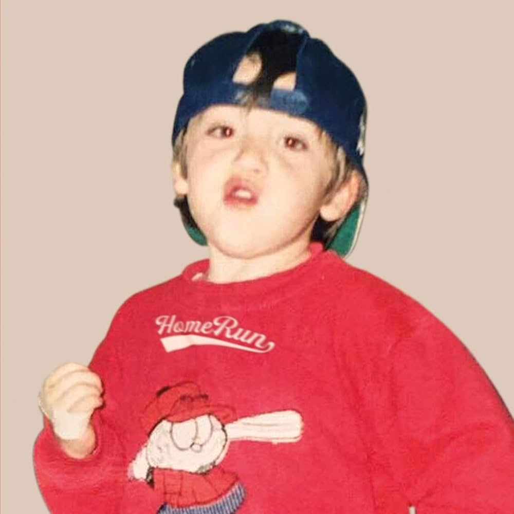

Paulo Londra nació el 12 de abril de 1998 en Córdoba, Argentina. Desde muy joven se interesó por la música y el freestyle.
 ↑ Volver al inicio | Ver fuenteComenzó subiendo videos de freestyle en YouTube. En 2017 lanzó su primer éxito "Relax". En 2018 firmó con Big Ligas y su popularidad explotó.
↑ Volver al inicio | Ver fuenteEstos son algunos de sus álbumes más importantes:
| Álbum | Año | Canciones destacadas |
|---|---|---|
| Homerun | 2019 | Adán y Eva, Tal Vez |
| Back to the Game | 2022 | Plan A, Nublado |
Ha sido nominado a importantes premios y tiene millones de reproducciones:
| Premio | Año | Resultado |
|---|---|---|
| Premios Billboard | 2020 | Nominado |
| Premios Juventud | 2021 | Nominado |
En 2024, Paulo lanzó varios sencillos nuevos y planea una gira internacional. Está más activo que nunca.